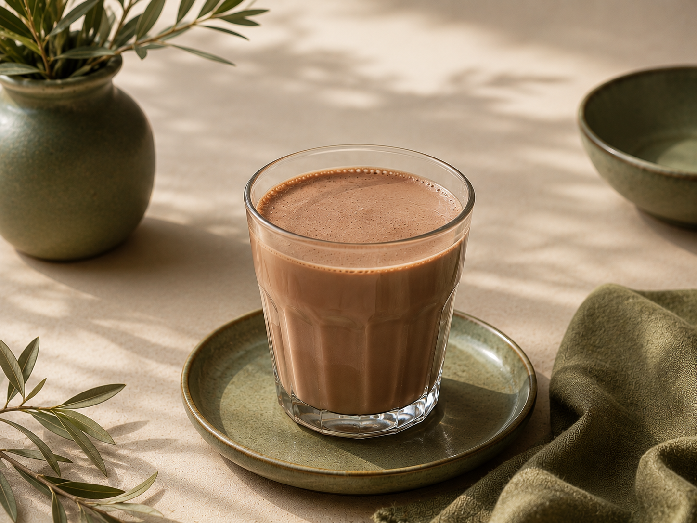

نوشیدنی شیرکاکائو
طعم شیرین لحظههای گرم با BoBo
شیرکاکائو BoBo با ترکیبی از شیر خشک کامل و دو نوع پودر کاکائوی مرغوب تهیه شده تا نوشیدنیای لطیف، متعادل و سرشار از عطر طبیعی کاکائو را برایتان فراهم کند. این محصول بدون استفاده از کریمر، امولسیفایر و سایر افزودنیهای صنعتی تهیه شده است تا طعم واقعی شیر و کاکائو حفظ شود. تنها با افزودن شیر داغ، در کمتر از دو دقیقه یک شیرکاکائوی خوشعطر و دلچسب آماده کنید؛ نوشیدنیای که برای صبحانه، عصرانه یا یک استراحت کوتاه در کنار خانواده، همراهی دوستداشتنی برای کیکها، کوکیها و شیرینیهای BoBo خواهد بود.
وزن بسته: ۵۰۰ گرم
زمان آمادهسازی: کمتر از ۲ دقیقه
اندازه هر سرو: ۳۰ گرم پودر + ۱۸۰ تا ۲۰۰ میلی لیتر شیر
دمای مایع: حدود ۷۵ تا ۸۵ درجه سانتیگراد
بازدهی: حدود ۲۰ لیوان
جهت ثبت سفارش به صفحات ما در پیامرسانهای اینستاگرام، تلگرام، بله یا ایتا مراجعه نمایید
زمان آمادهسازی: کمتر از ۲ دقیقه
اندازه هر سرو: ۳۰ گرم پودر + ۱۸۰ تا ۲۰۰ میلی لیتر شیر
دمای مایع: حدود ۷۵ تا ۸۵ درجه سانتیگراد
بازدهی: حدود ۲۰ لیوان